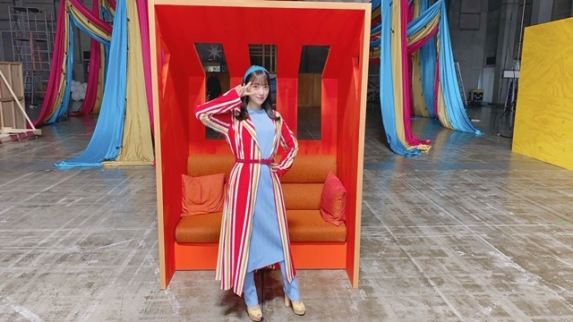
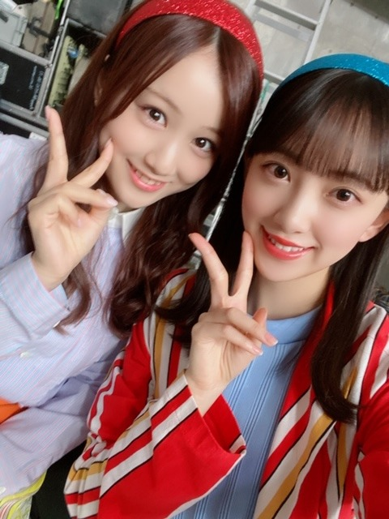
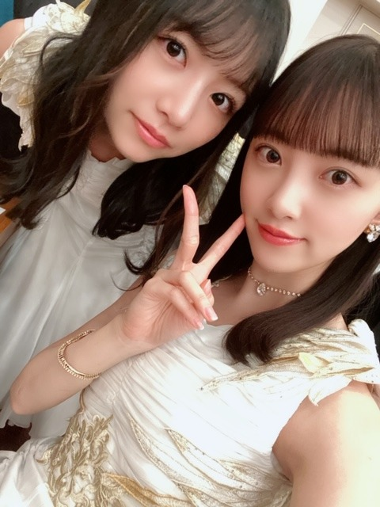
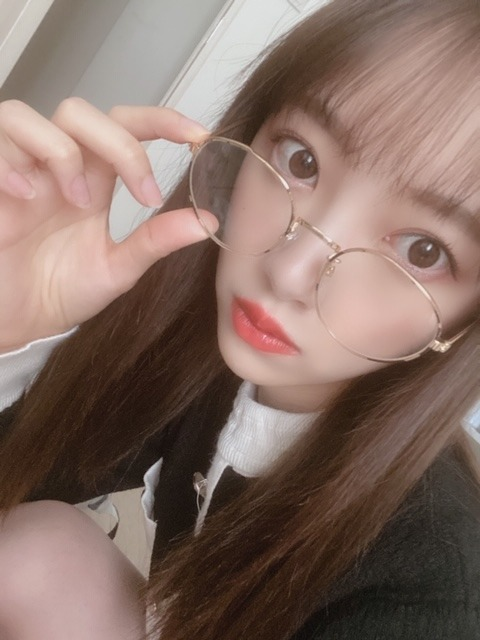

2020/0305Thu#しあわせの保護色
MVが公開されましたね✨
今までに無い雰囲気の、ミュージカルのようなMVでしてワンカットの撮影が多く新鮮で楽しかったです☺︎

衣装は私の好きな水色尽くし！
赤も差し色で可愛かったです☺︎
あとはカチューシャマニアとしてはキラキラブルーのカチューシャを付けれて嬉しかったなぁ
みなみと色違いにしたの！

みなみおな♡
最後のダンスシーンの衣装も好き

キラキラのチョーカーとイヤリングがお気に入りです！
白石さんが終始可愛くて美しくて...
映像越しだけどめちゃくちゃ輝いています。
一緒にペアダンスをさせていただいたシーンは
泣かないように我慢しました！
たくさん観てください。
感想お待ちしていますね〜(^-^)
ではは

2020/03/05 14:00
コメント(429)
しあわせの保護色。
めっちゃ好みなMVです！！
綺麗な空気感が凄く良いですね。
特に大きなミラーがあるシーンとか、華の中に花のシーンとか最高でした！
白と金が良く似合いますね！
めっちゃ好みなMVです！！
綺麗な空気感が凄く良いですね。
特に大きなミラーがあるシーンとか、華の中に花のシーンとか最高でした！
白と金が良く似合いますね！
未央奈さん、こんばんは
MV観ました(^_^)/
衣装もセットもカラフルで素敵でした
流れるような曲調で
聴いていて、とても心地よかったです
振り付けもミュージカルを
観ているようで素晴らしかったです
未央奈さん
水色のカチューシャと色鮮やかな衣装が
似合ってましたよ
まいやん
卒業にふさわしくキラキラしてました
泣きそうになるのを堪えてるシーンが
印象的です
笑顔で送り出してあげましょうね
みなみおな、堀北コンビの写真
可愛らしさ大爆発(^_^)
お～っと！
未央奈さん、眼鏡かけてる～
欲しかったんです＼(^_^)／
ありがとうございます！
またコメントしますね
MV観ました(^_^)/
衣装もセットもカラフルで素敵でした
流れるような曲調で
聴いていて、とても心地よかったです
振り付けもミュージカルを
観ているようで素晴らしかったです
未央奈さん
水色のカチューシャと色鮮やかな衣装が
似合ってましたよ
まいやん
卒業にふさわしくキラキラしてました
泣きそうになるのを堪えてるシーンが
印象的です
笑顔で送り出してあげましょうね
みなみおな、堀北コンビの写真
可愛らしさ大爆発(^_^)
お～っと！
未央奈さん、眼鏡かけてる～
欲しかったんです＼(^_^)／
ありがとうございます！
またコメントしますね
未央奈〜ブログ更新ありがとう
MV見たよ〜
泣かせにきたなー（笑）ってほんとに泣いちゃったよ〜ﾋﾟｴﾝ
明日のMステ見るね！
またコメントするね〜
こばより
MV見たよ〜
泣かせにきたなー（笑）ってほんとに泣いちゃったよ〜ﾋﾟｴﾝ
明日のMステ見るね！
またコメントするね〜
こばより
みおなちゃん、ミナモは知らないよ。
堀未央奈ちゃんは知ってるけど
堀未央奈ちゃんは知ってるけど
こんばんは。
ブログ更新ありがとうございます✨
しあわせの保護色」MV観させてもらいました‼︎
とてもいい感じですね
登場が各期ごとに分かれているんですね。
1期、2期、3期、4期と来て乃木坂という大きなグループになる感じでとても素晴らしいMVです。凄く感動的でした！まいやんにお花渡すのも素晴らしいです☺️
Showroomも楽しみにしてます
では、体調崩さず頑張ってください✨
ブログ更新ありがとうございます✨
しあわせの保護色」MV観させてもらいました‼︎
とてもいい感じですね
登場が各期ごとに分かれているんですね。
1期、2期、3期、4期と来て乃木坂という大きなグループになる感じでとても素晴らしいMVです。凄く感動的でした！まいやんにお花渡すのも素晴らしいです☺️
Showroomも楽しみにしてます
では、体調崩さず頑張ってください✨
安定に可愛い！！！
めっちゃ楽しそうな未央奈ちゃんが見れて幸せでした！！
エモかったです！
めっちゃ楽しそうな未央奈ちゃんが見れて幸せでした！！
エモかったです！
ＭＶ公開になったね～。でも、私はいつも商品購入してから見てるんだぁ～。変なこだわりだよね～＾＾；
気持ちを高めて発売を楽しみにしてます。
気持ちを高めて発売を楽しみにしてます。
みおなちゃん可愛すぎて嬉しかったです！
大好き！
大好き！
体がえらい えらいの方言は関西だよね 三重県とか京都でも つかわれております
眩しい
堀ちゃんとみなみちゃん最高です。
未央奈ちゃんブログありがとう！！
みなみおな大好き！！mv見たよ！！
まいやんとのペアダンスお互い微笑んでて最高に良かった！！
感動！！たくさん見るね！！それじゃあまた！！
みなみおな大好き！！mv見たよ！！
まいやんとのペアダンスお互い微笑んでて最高に良かった！！
感動！！たくさん見るね！！それじゃあまた！！
MV見たよー！
終始笑顔が溢れてて、すごいかわいくてめっちゃすきだった！
最後もみんなで笑顔でまいやんを送り出してまいやんも笑顔で答えるって感じのところは自分も笑顔になれたけど涙も出そうになって複雑だったなー。
曲もthe卒業みたいなしみじみした感じじゃなくて明るい感じで好きだし、とにかく「しあわせの保護色」は素晴らしい楽曲です！！
アナスターシャも楽しみにしてる！！
3/7のShowroomぜったいみるから！！
終始笑顔が溢れてて、すごいかわいくてめっちゃすきだった！
最後もみんなで笑顔でまいやんを送り出してまいやんも笑顔で答えるって感じのところは自分も笑顔になれたけど涙も出そうになって複雑だったなー。
曲もthe卒業みたいなしみじみした感じじゃなくて明るい感じで好きだし、とにかく「しあわせの保護色」は素晴らしい楽曲です！！
アナスターシャも楽しみにしてる！！
3/7のShowroomぜったいみるから！！
乃木坂ってグループは改めて偉大なグループで
あることを考えさせられるMVでもあり
こんなグループは他にはないよ！
あることを考えさせられるMVでもあり
こんなグループは他にはないよ！
優しい愛のある歌なのに
カラフルですよね（笑）
カチューシャいいですね。
衣装。
古代エジプトな雰囲気ありますね。
お、裏話！
明日はお披露目か～
カラフルですよね（笑）
カチューシャいいですね。
衣装。
古代エジプトな雰囲気ありますね。
お、裏話！
明日はお披露目か～
今回のミュージックビデオ観て、改めて、最高のグループだと再確認しました！！ 今までにない感じで新鮮さを感じたと同時に
皆が輝いてました！！ もう、早くシングル買いたい！笑笑
皆が輝いてました！！ もう、早くシングル買いたい！笑笑
好き。
mv最高でした！まいやんの視点でメンバーを見るアングルのシーン見ると泣けました。
未央奈ちゃんブログ更新ありがとう！
MV素晴らしかったです！
泣きました！
期ごとのパートとかあって凄い良かったです！
発売が待ち遠しいです♫
みなみおな、堀北コンビ最高！
体調に気を付けてこれからも頑張ってください！
MV素晴らしかったです！
泣きました！
期ごとのパートとかあって凄い良かったです！
発売が待ち遠しいです♫
みなみおな、堀北コンビ最高！
体調に気を付けてこれからも頑張ってください！
みおなちゃん！！！！
いち早くMV観ることができました！！
めちゃかわいかったです！
曲はまっちゃいました！！
大好きです！！
だいすきーーーーー
いち早くMV観ることができました！！
めちゃかわいかったです！
曲はまっちゃいました！！
大好きです！！
だいすきーーーーー
みなみおな可愛すぎる笑
まいやんとのペアダンス、泣かないように我慢してるの分かった!
未央奈ちゃんいつもブログ更新ありがとう！みなみおなと堀北コンビの画像イイね！あと幻の2期生ライブのshowroom配信も楽しみ
未央奈♥️ メガネがおしゃれ ❗❗
新曲MV見たよ。しなやかなダンスと歌声が、たまらなく好きだよ♥️
みおな♥️ かわいい❗❗
新曲MV見たよ。しなやかなダンスと歌声が、たまらなく好きだよ♥️
みおな♥️ かわいい❗❗
堀ちゃん、ブログ更新ありがとう〜
MV観たよー
堀ちゃんの衣装かわいいねー
当然堀ちゃんは断然かわいいー
土曜日の2期戦配信観るよー
堀ちゃん、大好きだよー
MV観たよー
堀ちゃんの衣装かわいいねー
当然堀ちゃんは断然かわいいー
土曜日の2期戦配信観るよー
堀ちゃん、大好きだよー
みおな
今日もお疲れ様です
しあわせの保護色MV見ました
曲も明るい感じで、みんなまいやんに対して笑顔でアットホームな感じがしたけど、その中に隠れる淋しさが感じ取れるMVでした（みんなすごく笑顔だけど本当は涙を堪えてるような感じ）
期生ごとに、均等にまいやんと踊る所やみおなとまいやんのダンスシーンがよかったです
まいやんは乃木坂の原点のようなメンバーの1人なので、今回で最後って思うと見てるファンも心に来るものがあります（卒コンで披露した時の事を想像して見たら既に泣きそうになった笑）
2期生ライブのshowroom配信が決定したから嬉しいです
土曜日の仕事は中止になって暇になったので、必ず見るね！
いつか幻じゃなくて、実現する日も楽しみにしてます
グッズのタオルも行書体でカッコイイです
明日のMステも新曲披露だと思うけど楽しみにしてます
また更新して下さい
ありがとうございました
P.S.今日はみおなの大好きな絢音ちゃんの誕生日だね
たくさんお祝いしてあげてね
日奈子は、インフルでダウンしてるみたいだから看病してあげてね
今日もお疲れ様です
しあわせの保護色MV見ました
曲も明るい感じで、みんなまいやんに対して笑顔でアットホームな感じがしたけど、その中に隠れる淋しさが感じ取れるMVでした（みんなすごく笑顔だけど本当は涙を堪えてるような感じ）
期生ごとに、均等にまいやんと踊る所やみおなとまいやんのダンスシーンがよかったです
まいやんは乃木坂の原点のようなメンバーの1人なので、今回で最後って思うと見てるファンも心に来るものがあります（卒コンで披露した時の事を想像して見たら既に泣きそうになった笑）
2期生ライブのshowroom配信が決定したから嬉しいです
土曜日の仕事は中止になって暇になったので、必ず見るね！
いつか幻じゃなくて、実現する日も楽しみにしてます
グッズのタオルも行書体でカッコイイです
明日のMステも新曲披露だと思うけど楽しみにしてます
また更新して下さい
ありがとうございました
P.S.今日はみおなの大好きな絢音ちゃんの誕生日だね
たくさんお祝いしてあげてね
日奈子は、インフルでダウンしてるみたいだから看病してあげてね
ブログ更新ありがとう！ミュージックビデオ見たよ！素晴らしすぎる！とってもしあわせな気分になったわ！ありがとう！
未央奈ブログ更新ありがとう。
またひとつ乃木坂にとって最高の作品が出来上がって嬉しいです。
特にダンスシーンと花束を渡すシーン、ここに関しては涙です。
残り少ない時間の中で、この曲が多くの人に届くことを願ってます。
またひとつ乃木坂にとって最高の作品が出来上がって嬉しいです。
特にダンスシーンと花束を渡すシーン、ここに関しては涙です。
残り少ない時間の中で、この曲が多くの人に届くことを願ってます。
花束をもらったまいやんが涙目になってるシーンにグッときました！
こんにちは‼︎
ブログ更新、ありがとうございます♪
『しあわせの保護色』、MV観ましたよ‼︎
まいやんの卒業ソングではあるけど、悲しみを際立たせるような曲ではなく、むしろほっこりとするような、優しいメロディ。
歌詞にもとっても共感しました‼︎
幸せはいつだって近くにある。
本当にそうですよね♪
学生時代の楽しい思い出だって、すぐに頭に浮かぶのは、休み時間の何気ない会話だったり、日頃の部活の練習だったりする。
実際に学生だった頃は、大事な夏の大会のことや、体育祭や文化祭などのイベントのことで頭がいっぱいで、そんな当たり前の日常のことを幸せなんて思ったこともなかった。
こういうのって、後から気がつくもんなんですよね♪
タイトルに『色』が入っていることもあって、衣装もセットもカラフルで、華やかなMVですね♪
みんなの笑顔に癒される、ほっこりするMV。
そして、最後のまいやんの笑顔。
すごくいい笑顔だけど、なんか切なくなるような、胸がキュッとなる終わり方ですね…
なんか、いい映画を見終わった後に似ている感じ。
1期から4期まで、まいやんが関わった全ての代に想いを伝えて、去っていく。
メッセージ性もあって、素敵なMVですね‼︎
明日、Mステに出演するんですよね。
楽しみにしてます♪
そうそう、今週末、SHOWROOMで2期生ライブをやるんですよね‼︎
このような状況の中、ライブの中止はやむなしだと思いますが、それでもなんとかファンの方々に喜んでもらえるような取組を行うというのは、本当にいいことだと思います♪
ただでさえ気持ちが塞ぎ込んでしまいがちな状況において、楽しみが増えるし、有難いと思う人が多いのではないでしょうか。
自分もとっても楽しみにしてます‼︎
ではでは、また。
明日も未央奈にとっていい1日になりますように♪
P.S 今日は絢音ちゃんの誕生日ですね‼︎
一緒にお祝いはできたのかな？
絢音ちゃんの21歳が、素敵な1年になりますように♪
ブログ更新、ありがとうございます♪
『しあわせの保護色』、MV観ましたよ‼︎
まいやんの卒業ソングではあるけど、悲しみを際立たせるような曲ではなく、むしろほっこりとするような、優しいメロディ。
歌詞にもとっても共感しました‼︎
幸せはいつだって近くにある。
本当にそうですよね♪
学生時代の楽しい思い出だって、すぐに頭に浮かぶのは、休み時間の何気ない会話だったり、日頃の部活の練習だったりする。
実際に学生だった頃は、大事な夏の大会のことや、体育祭や文化祭などのイベントのことで頭がいっぱいで、そんな当たり前の日常のことを幸せなんて思ったこともなかった。
こういうのって、後から気がつくもんなんですよね♪
タイトルに『色』が入っていることもあって、衣装もセットもカラフルで、華やかなMVですね♪
みんなの笑顔に癒される、ほっこりするMV。
そして、最後のまいやんの笑顔。
すごくいい笑顔だけど、なんか切なくなるような、胸がキュッとなる終わり方ですね…
なんか、いい映画を見終わった後に似ている感じ。
1期から4期まで、まいやんが関わった全ての代に想いを伝えて、去っていく。
メッセージ性もあって、素敵なMVですね‼︎
明日、Mステに出演するんですよね。
楽しみにしてます♪
そうそう、今週末、SHOWROOMで2期生ライブをやるんですよね‼︎
このような状況の中、ライブの中止はやむなしだと思いますが、それでもなんとかファンの方々に喜んでもらえるような取組を行うというのは、本当にいいことだと思います♪
ただでさえ気持ちが塞ぎ込んでしまいがちな状況において、楽しみが増えるし、有難いと思う人が多いのではないでしょうか。
自分もとっても楽しみにしてます‼︎
ではでは、また。
明日も未央奈にとっていい1日になりますように♪
P.S 今日は絢音ちゃんの誕生日ですね‼︎
一緒にお祝いはできたのかな？
絢音ちゃんの21歳が、素敵な1年になりますように♪
いつも更新ありがとう~~！MV見ました！すっごいかわいかった！！
未央奈ちゃんブログありがとう〜♡
昨日は、レコメン！からのオールナイトニッポンお疲れ様でした！最初から最後まで見て、聴いたよ！岐阜のこと沢山知れました。これからもっともっと岐阜のこと知りたいなぁ！岐阜は行ったことないから行ってみたい！
レコメン！の前にも他にお仕事がいくつかあったらしくて本当に忙しくて体調崩しやすいけど、無理せず未央奈ちゃんなりに頑張ってください！
しあわせの保護色のMV見たよ！
感動して、泣いちゃった〜。終始、涙が止まらなくて、、明日のMステ楽しみにしてます。
ではは
昨日は、レコメン！からのオールナイトニッポンお疲れ様でした！最初から最後まで見て、聴いたよ！岐阜のこと沢山知れました。これからもっともっと岐阜のこと知りたいなぁ！岐阜は行ったことないから行ってみたい！
レコメン！の前にも他にお仕事がいくつかあったらしくて本当に忙しくて体調崩しやすいけど、無理せず未央奈ちゃんなりに頑張ってください！
しあわせの保護色のMV見たよ！
感動して、泣いちゃった〜。終始、涙が止まらなくて、、明日のMステ楽しみにしてます。
ではは
未央奈可愛い!ずっと応援します!
ＭＶ見ました
旅立つまいやんをみんなで温かく見守りながら背中を押しているような感じですごく良いと思います
ペアダンスのところはグッときますね
みなみおなも可愛くて最高です
旅立つまいやんをみんなで温かく見守りながら背中を押しているような感じですごく良いと思います
ペアダンスのところはグッときますね
みなみおなも可愛くて最高です
レコメンからのANNお疲れ様でしたー。聞いたよー。
MVも見なきゃッ。
毎日毎日大忙しだねー。充実してそうー。
ニキラの代わりの企画も楽しみだし、二期生がそれに前向きになって話し合って作ってくれてるのが嬉しい！
目の前に壁があっても、みんなで知恵と力と気持ちを合わせて乗り越えようとしてるんだなって。それは自分たちのためだけでなく、支えてくれている人たちのことも想って、、。
また、一段と結束略何高まるよねー。
そんな二期生、未央奈ちゃんにまた会うのを楽しみにしてます！
いつも元気をありがとう！
MVも見なきゃッ。
毎日毎日大忙しだねー。充実してそうー。
ニキラの代わりの企画も楽しみだし、二期生がそれに前向きになって話し合って作ってくれてるのが嬉しい！
目の前に壁があっても、みんなで知恵と力と気持ちを合わせて乗り越えようとしてるんだなって。それは自分たちのためだけでなく、支えてくれている人たちのことも想って、、。
また、一段と結束略何高まるよねー。
そんな二期生、未央奈ちゃんにまた会うのを楽しみにしてます！
いつも元気をありがとう！
可愛すぎてもう十回以上見てますが毎回泣いてます
可愛いらしくも楽しいMVありがとう～(*^^*)
未央奈～ こんにちは
お忙しい中での連日のブログ更新、ありがとうございます。
昨夜はレコメン・ＡＮＮのはしご生放送、おつかれさまでした。
特に絢音ちゃんへの午前０時の「ハッピー・バースデイ」コール、しっかり未央奈の思い伝わってきましたよ。それにインフルエンザになってしまったきいちゃんの分も頑張っていたこと、よ～く伝わってきました。
ナゴヤドームでの４日間、ＴＧＣの無観客実施、そして今週末の幻の２期生ライブ、１週間でこんなにも違うのかと驚くばかりですが、ラジオやＬＩＶＥ配信を通して、その思いがちゃんと伝わってくるところはさすがプロですね。頭が下がります。
それにしても特に熱い思いを持っていた「２期生ライブ」、これがＳＨＯＷＲＯＯＭを通して特別番組として配信されると聞いて、これほどうれしいことはありません。「今の私たちに何ができる」をメンバー・スタッフさんで知恵を絞って考えてくださったおかげだと思います。楽しみにしたいと思います。
そして、レコメンでも聞かせていただいた新曲「しあわせの保護色」、ＭＶ公開され、繰り返し見ています。今から発売が楽しみでなりません。まいやんを中心に、みんなのぬくもりが伝わってくるような感じで、まさに「しあわせ」を感じますね。
まずは、「Ｍステ」でのテレビ初パフォーマンス、楽しみにしています。きいちゃんの分もよろしくね。
お忙しい中での連日のブログ更新、ありがとうございます。
昨夜はレコメン・ＡＮＮのはしご生放送、おつかれさまでした。
特に絢音ちゃんへの午前０時の「ハッピー・バースデイ」コール、しっかり未央奈の思い伝わってきましたよ。それにインフルエンザになってしまったきいちゃんの分も頑張っていたこと、よ～く伝わってきました。
ナゴヤドームでの４日間、ＴＧＣの無観客実施、そして今週末の幻の２期生ライブ、１週間でこんなにも違うのかと驚くばかりですが、ラジオやＬＩＶＥ配信を通して、その思いがちゃんと伝わってくるところはさすがプロですね。頭が下がります。
それにしても特に熱い思いを持っていた「２期生ライブ」、これがＳＨＯＷＲＯＯＭを通して特別番組として配信されると聞いて、これほどうれしいことはありません。「今の私たちに何ができる」をメンバー・スタッフさんで知恵を絞って考えてくださったおかげだと思います。楽しみにしたいと思います。
そして、レコメンでも聞かせていただいた新曲「しあわせの保護色」、ＭＶ公開され、繰り返し見ています。今から発売が楽しみでなりません。まいやんを中心に、みんなのぬくもりが伝わってくるような感じで、まさに「しあわせ」を感じますね。
まずは、「Ｍステ」でのテレビ初パフォーマンス、楽しみにしています。きいちゃんの分もよろしくね。
オールナイト聴きましたよー。
埼玉と東京の関係はよくわかんないけど、岐阜と名古屋はまぁ良い関係性だと思う。
なんとなく他県って感じじゃなくて、同じ地域の中にあるイメージです。
でも岐阜って面積とんでもなく広いよね。
大垣から飛騨、中津川の方まであるし。
もはや小さな国レベル。笑
岐阜市は都市機能がまとまってるし、住みやすそうだし、いいよね。
個人的には岐阜市と尾張を合わせて、コンパクトな一つの県を造ったら結構いい感じだと思う。笑
堀ちゃんは岐阜市内で生まれ育ったということで、うらやましいなぁ～。
埼玉と東京の関係はよくわかんないけど、岐阜と名古屋はまぁ良い関係性だと思う。
なんとなく他県って感じじゃなくて、同じ地域の中にあるイメージです。
でも岐阜って面積とんでもなく広いよね。
大垣から飛騨、中津川の方まであるし。
もはや小さな国レベル。笑
岐阜市は都市機能がまとまってるし、住みやすそうだし、いいよね。
個人的には岐阜市と尾張を合わせて、コンパクトな一つの県を造ったら結構いい感じだと思う。笑
堀ちゃんは岐阜市内で生まれ育ったということで、うらやましいなぁ～。
素敵なMVでしたね
明日のMステ楽しみです
明日のMステ楽しみです
MV見たよー最っ高！！感動
MV衣装良いね！
まいやんと最後のMV撮影楽しめた？？
堀北コンビ～好きだよ～
二期生ライブ(ショールーム配信)楽しみ～～！
頑張ってね～～～！！
またコメントするねー！！
MV衣装良いね！
まいやんと最後のMV撮影楽しめた？？
堀北コンビ～
二期生ライブ(ショールーム配信)楽しみ～～！
頑張ってね～～～！！
またコメントするねー！！
かわいい
堀さん、こんばんは。
ロミオ＋ジュリエット見ましたよ。ディカプリオが美しくてテンポも良くて面白かったです。水槽で始まってロウソクの火の中で終わっていくんですね。
水槽越しの一目惚れはとても綺麗で、魚にも相手にも自分を重ねていたのだとしたら、一目惚れも最後の2人の選択も彼らが両家に生まれなければ起きないことだったかもしれないです。
エンディングの後の両家の人達やこの映画を見た人達が名誉より幸福を、無くていい慣習を捨てて我が道を行くことを大事にできたら、2人の不幸は沢山の幸福を生んだのかもしれないなって思いました。
あと新曲MV見ました。カチューシャ姿のもダンスのも衣装が可愛いです。
仰る通りミュージカル映画みたいで、登場人物達のその後の人生が始まりますみたいなオープニング感のあるエンディングみたいでとても良かったです。MV見てたら結婚式に合う曲な気がしてきました。
あと前回のブログのマネージャーさんに素直さを肯定してもらえた話、良かったですね。マネージャーさんが堀さんにしたみたいに、素直な気持ちをきちんと出させる手助けを、互いにできる関係を増やせていけたらいいですね。
2期生ライブのSHOWROOM必ず見ますね。ANN見てて思ったんですが、動いてる堀さんの可愛さはとてつもないのです。全犬猫よりも可愛いと思います。忙しいと思いますが、ちゃんと栄養も休息も取りつつ頑張ってくださいね。応援してます。
ロミオ＋ジュリエット見ましたよ。ディカプリオが美しくてテンポも良くて面白かったです。水槽で始まってロウソクの火の中で終わっていくんですね。
水槽越しの一目惚れはとても綺麗で、魚にも相手にも自分を重ねていたのだとしたら、一目惚れも最後の2人の選択も彼らが両家に生まれなければ起きないことだったかもしれないです。
エンディングの後の両家の人達やこの映画を見た人達が名誉より幸福を、無くていい慣習を捨てて我が道を行くことを大事にできたら、2人の不幸は沢山の幸福を生んだのかもしれないなって思いました。
あと新曲MV見ました。カチューシャ姿のもダンスのも衣装が可愛いです。
仰る通りミュージカル映画みたいで、登場人物達のその後の人生が始まりますみたいなオープニング感のあるエンディングみたいでとても良かったです。MV見てたら結婚式に合う曲な気がしてきました。
あと前回のブログのマネージャーさんに素直さを肯定してもらえた話、良かったですね。マネージャーさんが堀さんにしたみたいに、素直な気持ちをきちんと出させる手助けを、互いにできる関係を増やせていけたらいいですね。
2期生ライブのSHOWROOM必ず見ますね。ANN見てて思ったんですが、動いてる堀さんの可愛さはとてつもないのです。全犬猫よりも可愛いと思います。忙しいと思いますが、ちゃんと栄養も休息も取りつつ頑張ってくださいね。応援してます。
MV見ました、未央奈の衣装めちゃくちゃ似合ってます、まいやんとのダンスパートも良かったです。しあわせの保護色、秋元さんのメッセージ気づいたかもしれません。
儒教辺りに礼って思いやることで相手の立場になれば生まれるみたいなのがあって
礼儀正しくって言うとお硬い感じだけどそう考えるとつまらない感じが礼かと
言うと微妙だなあというかもっと柔らかくサービス精神みたいな事も含めるイメージなのかなって
そうやって楽しんでいけたらしあわせかなぁとか
一期一会って言うと今を逃しちゃだめみたいなネガティブな感じもあるけど
むしろ今一緒に居られるありがたさ的なそういう捉え方もできるのかなと
なんて事が浮かんできた新曲のMVでした
礼儀正しくって言うとお硬い感じだけどそう考えるとつまらない感じが礼かと
言うと微妙だなあというかもっと柔らかくサービス精神みたいな事も含めるイメージなのかなって
そうやって楽しんでいけたらしあわせかなぁとか
一期一会って言うと今を逃しちゃだめみたいなネガティブな感じもあるけど
むしろ今一緒に居られるありがたさ的なそういう捉え方もできるのかなと
なんて事が浮かんできた新曲のMVでした
MVの未央奈が出てくるシーン可愛かったなぁ！
めちゃめちゃよかったです！
しあわせの保護色のMV見たよ〜
各期生別のシーンがたくさんあって、最後はみんなで楽しく踊って送り出す！
ペアダンスもよかったな
ミナミオナは健在だね！
素敵です
では、またね
各期生別のシーンがたくさんあって、最後はみんなで楽しく踊って送り出す！
ペアダンスもよかったな
ミナミオナは健在だね！
素敵です
では、またね
堀さん、おはようございます。
25枚目シングル表題曲『しあわせの保護色』のMVが公開されましたね。さっそく観てまいりましたよ。
カラフルな衣装とセットがとても華やか。でも決して派手ではなく、しっとりゆったりした曲調もあいまって、その世界観は平和で情感たっぷりです。
別れの時を惜しむように一期生、二期生と各期別ごとに踊る白石さんが尊く愛おしい存在です。ラストシーンの微笑みまで、見どころいっぱいのすてきな作品をありがとうございます。
今夜の『ミュージックステーション』でテレビ生放送初披露ですね。楽しみに待ちたいと思います。
ではまたコメント寄せます。どうぞすてきな週末を。
さらばだ、また会おう！（気球に乗って去りぬ〜）
25枚目シングル表題曲『しあわせの保護色』のMVが公開されましたね。さっそく観てまいりましたよ。
カラフルな衣装とセットがとても華やか。でも決して派手ではなく、しっとりゆったりした曲調もあいまって、その世界観は平和で情感たっぷりです。
別れの時を惜しむように一期生、二期生と各期別ごとに踊る白石さんが尊く愛おしい存在です。ラストシーンの微笑みまで、見どころいっぱいのすてきな作品をありがとうございます。
今夜の『ミュージックステーション』でテレビ生放送初披露ですね。楽しみに待ちたいと思います。
ではまたコメント寄せます。どうぞすてきな週末を。
さらばだ、また会おう！（気球に乗って去りぬ〜）


未央奈しか経験してない出来事、難しい立場。グループが大きくなっていく真っ只中でずっと1期と2期の間にいた未央奈にしかわからない感覚
や先輩の背中の見え方。悩んだこともたくさんあっただろうけどだからこそ感じられるであろう1期生、そしてまいやんの存在に対する思い。それを噛み締めるかのような2人でのダンス、良かったです。。
伝えられるだけ伝えて、形にしてあげてください！まいやんにも、残っているメンバーにも。
みんなの笑顔も見れるしあたたかくてでも切ない、乃木坂だから出せる曲、MVの感じでほんとに好き！！めっちゃ涙出るけど！
みなみおな色違いも最高！
Mステではライブで披露してくれた時の振りなのかな、、また泣きそ笑
あと昨日のANN最高に可愛かった！いろんな表情見せてくれるのがほんとに好き！トークもおもしろいし笑
明日の2期生配信もめっちゃ楽しみ！！